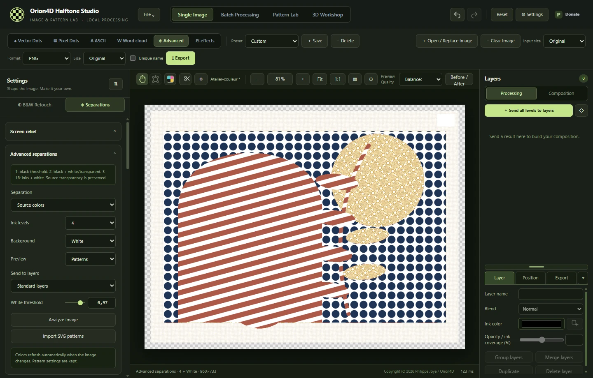

V2.0.0 · WINDOWS X64
Orion4D Halftone Studio
Halftones, ink and relief
Turn your images into engravings, prepare ink separations or sculpt halftones in 3D. All image processing runs locally.

Tools
Find the chapter for your project, from your first halftone to the final file.
Halftones and engraving
Vector and pixel dots, continuous hatching and adaptive stippling.
Ink separations
CMYK, two-colour, three-colour and up to eight inks with ICC profiles.
ASCII art and word clouds
Build an SVG silhouette or portrait from characters and words.
Layers and exports
Stack inks and export compositions or separation films.
3D Workshop
Sculpt a halftone, prepare a lithophane or animate a relief.
JS effects and local MCP
Write effects with adjustable controls and operate the 2D tools through MCP.
Separate input and export sizes
Process an image at its original size, as a percentage or at a fixed dimension. Choose the output size separately for single images and batch jobs.
Gallery examples
Explore the examples and find the settings used to create them.

JS EFFECTS
Topographic hatching
The tones in the image bend the lines. A second set of lines appears in the shadows.
Create an effect with adjustable controls ↗Compare seven black-and-white treatments ↗

RETRO HALFTONE
Security guilloché
Wavy lines cross as the tones darken.
Explore the halftone engines ↗
SEPARATIONS
A different pattern for each ink
One image combines several screens. In Advanced mode, you can adjust each screen’s pattern, colour and coverage.
Prepare a separation ↗
WORD CLOUD
A silhouette made of words
The image mask controls placement. Word size, rotation and colour shape the silhouette.
Create a word cloud ↗
3D WORKSHOP
Simulated gold foil
Use the 3D Workshop to adjust the material, lighting and framing of a halftone render.
Light a halftone in relief ↗